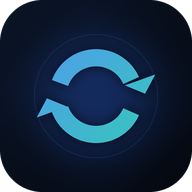

ContinuumSync
Two devices. One flow.
Install the bridge
Mirror notifications, share the clipboard instantly, and answer real calls from either device. Pair once with a QR code — one device hosts the room itself, with no PC or web server.
Download Android APK- Install the APK on both devices and connect both to the same Wi-Fi. Allow installs from your browser when Android asks.
- Open Devices on the device you want as host. It shows a QR code and a pairing code as soon as it has a Wi-Fi address.
- On the other device open Devices → Scan QR code and scan it. The pair connects directly over Wi-Fi; you can also share the pairing link or type the code.
- Grant notification access and “Display over other apps” on both devices so alerts, replies and instant clipboard work everywhere. Phone and contact access is requested only on the device with the SIM.
- Wait for the Linked pill. Copy text on either device, reply to or dismiss an alert from the Alerts feed, or take a call — the other device shows it with Answer and Decline.
Both devices must be on the same Wi-Fi network without client isolation. Guest or isolated Wi-Fi networks block device-to-device traffic — use your normal network or a hotspot instead. Call audio stays on the device with the SIM; the other device is the remote screen and control. Tablets such as the OnePlus Pad 2 are supported and simply hide SIM-only permissions.